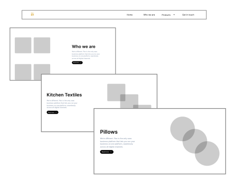
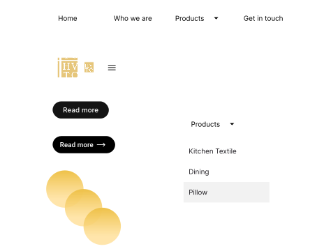

Crafting User-Centric Elegance:
A Textile Product Sale Website
- TOOLS: FIGMA, FIGJAM, ZOOM, VS CODE
- SKILLS: INTERACTION DESIGNER, UI DESIGNER, UX RESEARCHER, UX DESIGNER
About Hodson Valley

This project epitomizes our dedication to user-centric design, unwavering commitment to quality, and the ambition to make a meaningful impact on UK households through our meticulously curated textile offerings.

Design Process
STEP 1
User-Centric Low-Fidelity Wireframes
"In line with our Information Architecture (IA) and thorough research, we crafted low-fidelity wireframes as a foundational step in the design process for our textile project. They help us visualize the user experience and ensure alignment with user-centric design principles.
STEP 2

A Collaborative Journey
Throughout our design process, we embarked on a journey of continuous improvement, crafting multiple iterations of our user interface.
STEP 3
Crafting Comprehensive Design Assets
In this phase, we meticulously prepared a wealth of resources, including thorough design specifications, comprehensive style guides, and the timely delivery of all critical graphic assets. This holistic approach to documentation and asset preparation serves as the bedrock for the successful realization of our vision.
Information Architecture
Grid Systems and Layout
About Colors
Typography
Inter
For Heading and Body text
we've chosen the Inter font for our website's body text because it's a stylish and easy-to-read typeface. It looks clean and modern, which matches our minimalist design. Sans-serif fonts like Inter are popular for web content because they're straightforward and clear, making it easier for people to read on screens. So, it's both aesthetically pleasing and practical for our website's text.